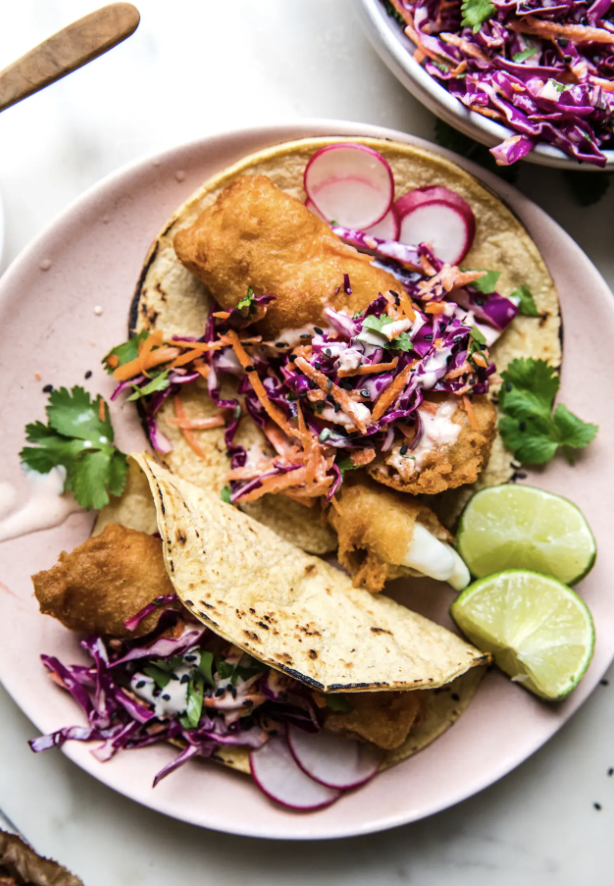

Fried Fish Tacos

Fried Fish Tacos
Fried Fish Tacos with Spicy Aoili Sauce
Ingredients
- Tbsp fresh lime juice
- 3 Tbsp mayonnaise
- 1 Tbsp rice vinegar
- 1 tsp Sriracha, plus more to taste
- 1 Tbsp honey
- 1 Tbsp toasted sesame oil
- 1/2 tsp sea salt
- 3 cups purple cabbage, shredded
- 1/3 cup cilantro, roughly chopped, plus more for serving
- 1/3 cup mayonnaise
- 1 Tbsp fresh lime juice
- 1 Tbsp rice vinegar
- 1 Tbsp Sriracha
- 12 oz pale ale (or other light beer), 1 can
- 2 1/4 cups flour, divided
- 1 tsp baking powder
- 1 -1 1/4 lbs fresh cod, roughly cut into 1” x 5” inch pieces
- 2 Tbsp sea salt
- 1 tsp cayenne (plus more for seasoning)
- 1 tsp garlic powder
- Canola Oil or Vegetable Oil (enough to fill a large saucepan three inches deep)
- 12 Corn tortillas, warmed or toasted
- thinly sliced radishes
Cooking
- In a large bowl, whisk together lime juice, mayonnaise, rice vinegar, sriracha, honey, sesame oil and salt until smooth. Add the cabbage, cilantro, toss to combine with the dressing and refrigerate.
- Mix Remaing mayonnaise, lime juice, rice vinegar and siracha and set aside.
- n a medium bowl whisk together the beer, 1 1/4 cups flour, the baking powder and 2 teaspoons salt until there are no longer any lumps left. The batter consistency should be a little bit runnier then pancake batter and completely smooth, set aside.
- In a large pot, pour in oil about three inches deep and heat to 350°-375°F with a deep fat thermometer.
- In a pie pan or a rimmed plate mix the remaining 1 cup flour with 1 tablespoon salt, cayenne and garlic powder together until very well incorporated.
- To prepare the fish, season with remaining 1 teaspoon salt. Coat each piece of fish with the flour mixture, then dredge in wet batter. Make sure that your fish is completely coated, then allow any excess batter to drip off while still holding it. Gently lower the fish into the hot oil. If your fish sticks to the bottom, lower it in more slowly or quickly scrape it off the bottom of the pan using a slotted spoon. After 3-4 min, flip the fish. Cook for 2-3 more minutes and remove with a slotted spoon onto a paper towel lined plate. Adjust the heat up or down between the batches so that the fish are always frying at around 350°F. Try not to overcrowd the pot.
- Once your fish is all cooked, assemble the tacos. Fill each tortilla with one piece of fish, a serving of coleslaw, a drizzle of crema, a few radishes, some cilantro and black sesame if desired.
Done